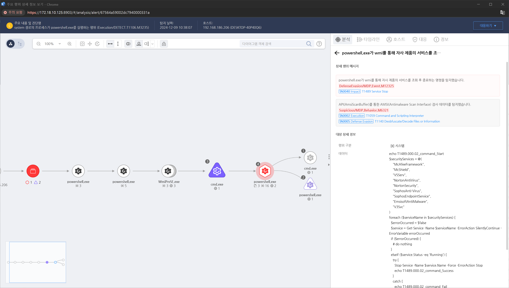

MITRE ATT&CK 액션을 기준으로 대응 방안을 작성
powershell.exe가 wmi를 통해 자사 제품의 서비스를 조회 후 종료하는 명령을 탐지합니다.

sc.exe 또는 PowerShell을 사용하여 서비스 중단을 시도하는 명령을 모니터링합니다.
Splunk, Microsoft Sentinel, 또는 ELK 스택에서 서비스 중단 관련 로그를 수집하고 탐지 규칙을 생성합니다.
Sysmon으로 프로세스 생성 및 서비스 관리 활동을 기록합니다.
서비스 비활성화 방지
서비스 복구 설정 강화
AppLocker 및 WDAC 정책 적용
관리자 계정 최소화
Action 실행시 함께 영향을 받는 다른 Techniqes
| ATT&CK |
|---|
| T1007.000 |
| D3FEND |
|---|
| D3-PT Process Termination |
| D3-PS Process Suspension |
| D3-SBV Service Binary Verification |
| D3-SCF System Call Filtering |
| D3-ED Executable Denylisting |
| D3-EWSAM Endpoint-based Web Server Access Mediation |